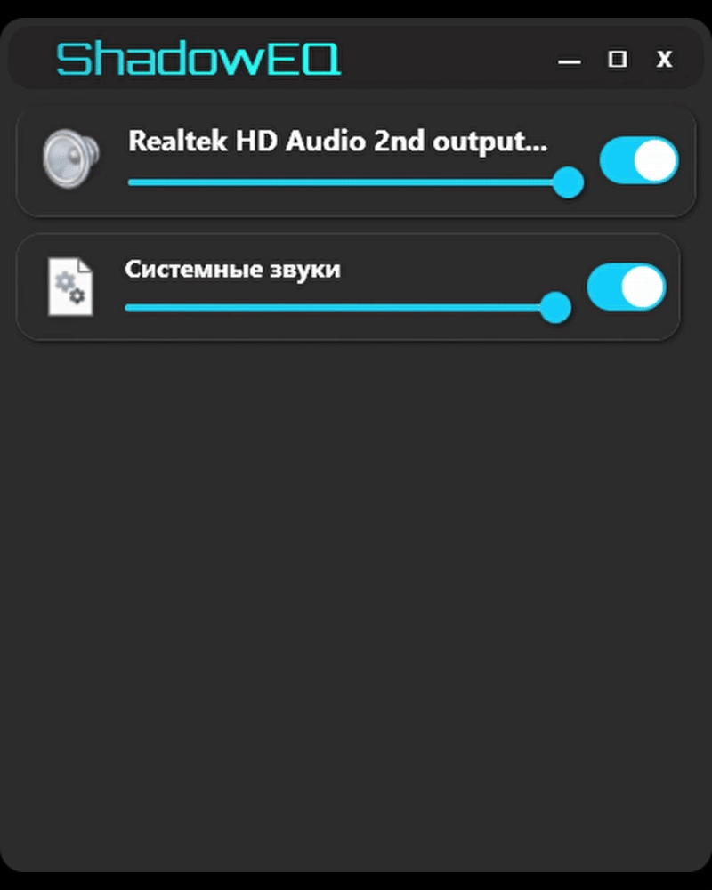

Что такое ShadowEQ?
ShadowEQ — это революция в управлении звуком для активных пользователей ПК. Геймерам он помогает настроить звук шагов в шутерах, стримерам — мгновенно заглушить шум, а разработчикам — оптимизировать аудио для тестов. Забудь про сложные манипуляции: все под рукой!
ShadowEQ, разработанный для Windows, позволяет управлять звуком одним касанием, превращая рутину в удовольствие. Мы уже работаем над расширением поддержки для macOS и Linux, чтобы еще больше пользователей могли оценить преимущества ShadowEQ. Интуитивный интерфейс и передовые технологии — твой ключ к идеальному звуку!
